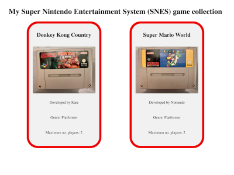
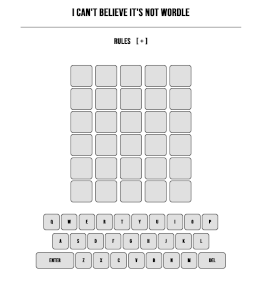
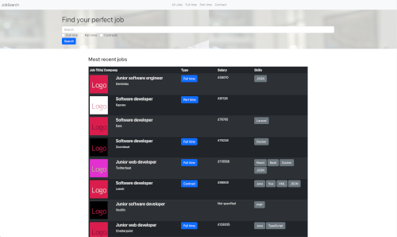
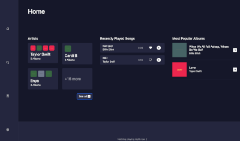

Collection App
This was our second, and final, solo project. This application displays a part of my retro video game collection.
It is an HTML and CSS site, with the data stored in an SQL database
Wordle Clone
For this, our first group project, we were tasked with creating a clone of the game Wordle.
Written in JavaScript, it picks a random word from a json file and allows 6 guesses. Like the original, it lets you know which letters are correct, but in the wrong location, and which are correct and in the correct location. It also has a timer to prevent repeated games, utilizing local storage to prevent refreshing the page negating the timer.
Job Search App Front End
This group project was to create a front end, in React, for a supplied API
My contributions to this project included formatting using Bootstrap and work on the modal.
Music player API
For this project, we were given a front end with API documentation. Our task was to build the API in PHP, using OOP, while adhering to SOLID.
My main contribution to this project was working out how to get data from the front end.